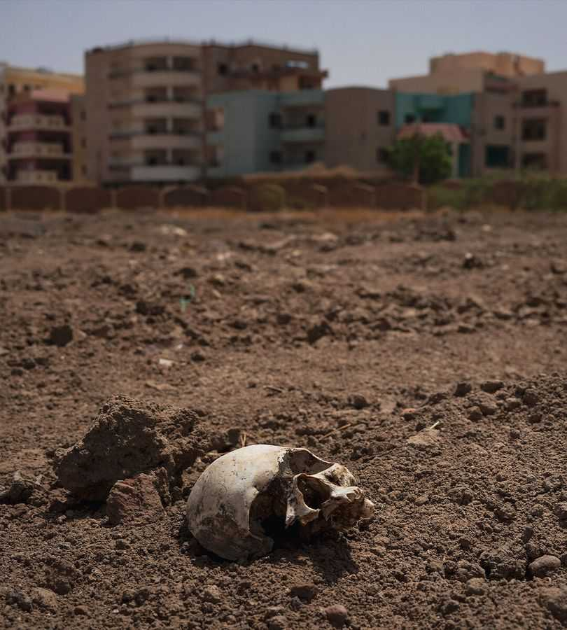

How to end Sudan’s brutal, forgotten conflict
There is a sliver of a chance of a ceasefire. It must be grabbed

Aug 6th 2026
It may be impossible to find a single place that sums up the devastation caused by Sudan’s civil war, now deep into its fourth year. But as we report after a rare trip to the country, its ruined capital comes close. Before the war erupted in April 2023, Khartoum was a bustling city of around 7m people. Today its centre is deserted. Bare husks remain of government buildings. Smart homes and luxury hotels are in ruins. The streets, charred by fighting, are silent. So many bodies have been dumped that human skulls spill out of makeshift mass graves. And still the killing continues.
Khartoum is the scarred heart of one of Africa’s worst conflicts this century. War has destroyed swathes of the continent’s third-largest country and driven 14m people from their homes. Hundreds of thousands have probably been killed by fighting, famine and bursts of genocidal violence. The only recent African war whose horrors are comparable is the one in Congo, which may have killed more than 5m people in the early 2000s. Yet the war in Sudan is even more important geopolitically. As we warned two years ago, it has drawn in neighbouring countries, helping reignite civil wars in South Sudan and Yemen and threatening another round of killing in Ethiopia.
Outsiders have shown callous indifference to the suffering, by paying to keep the fighting going or neglecting it. Yet by endangering shipping in the Red Sea, the wars in Sudan and Iran are overlapping. That may raise the cost of prosecuting the war to its sponsors, giving them a reason at last to seek to bring about peace.
On the face of it, Sudan’s war is a conflict between two main belligerents: the Sudanese Armed Forces (SAF), the country’s regular army and de facto government; and the Rapid Support Forces (RSF), a rich and well-equipped militia. Various other Sudanese groups are allied with the two sides. Yet the fighting is also a proxy war between deep-pocketed regional powers vying for resources and influence. The RSF receives weapons, money and mercenaries from the United Arab Emirates (UAE), though the UAE strenuously denies providing it with support. To a lesser degree, the SAF is armed and bankrolled by Egypt, Qatar, Saudi Arabia and Turkey.
Until very recently, all these actors had an overwhelming interest in keeping the war going. The RSF has periodically claimed to be ready for ceasefire talks, but has used its spoils to grow into a military and economic empire with ambitions to rule the country. And our conversations with SAF leaders in Sudan give every impression that they continue to believe they can vanquish the RSF and hence oppose talks.
Meanwhile, outsiders with the power to exert pressure on the belligerents and their supporters have been distracted. Europe is focused on Ukraine. President Donald Trump, who last November vowed to end the war, is caught up in his disastrous campaign in Iran. Many Sudanese, resigned to being treated as a lost cause, have begun to speak of a “Somalia timeline”: a decades-long conflict with no end in sight.
Now two developments have combined to create a chance of ending the war—albeit a slim one. Since America attacked the Islamic Republic in February, chaos in the Gulf has mostly made Sudan an even lower priority than usual. Having a shared foe in Iran did little to dampen the rivalry between Saudi Arabia and the UAE that is playing out in Sudan.
But as Dwight Eisenhower, a former American president, supposedly once said: when a problem cannot be solved, enlarge it. As the Iran war expands, attention is moving from the Strait of Hormuz, which remains closed for the moment, to the Red Sea, which may soon be. In recent weeks the Houthis, an Iran-backed militia in Yemen, have launched attacks on oil tankers linked to Saudi Arabia, leading to a sharp reduction in shipping through the sea’s Bab al-Mandab strait.
So far, Saudi Arabia and the UAE have treated their contest in the region as zero-sum. Yet recent attacks in the Red Sea have further underlined the importance of Sudan’s coastline for Saudi Arabia, reviving its interest in the war. That could make it costlier and riskier for the UAE to keep up its backing for the RSF, which could open the door to a truce in Sudan becoming part of a wider settlement in the Middle East.
The second factor is a turn in fortunes on the battlefield. In the past two weeks the SAF has made its most telling breakthroughs since its return to Khartoum 18 months ago. In late July it regained control of a key highway connecting the capital to el-Obeid, a strategic regional hub which the RSF has been trying to capture for months. It has also retaken Kurmuk, a town on the border with Ethiopia.
Although it may now be tempted to double down on trying to defeat the RSF, the army has also long argued that it wants to negotiate from strength—a position it now holds. Moreover, the longer the search for a ceasefire is delayed, the less likely it will be to stick. The two sides comprise dozens of militias. The SAF knows that, as the war drags on, more power will drain away to groups with a stake in perpetuating the war economy. Fragmentation will follow, whoever is in charge.
True, the chances of a successful ceasefire are small. But the time for a diplomatic push is now. For the next month or so, Sudan’s rainy season means that there will be a lull in the fighting. A “humanitarian truce” proposed by Massad Boulos, Mr Trump’s overstretched Africa envoy, has a better chance of holding while the battle lines are relatively static.
America and Europe should lean on their Gulf allies to press the belligerents they support to talk directly to each other for the first time. Saudi Arabia, Egypt and Turkey should urge the SAF to stop insisting the RSF disarm and demobilise before negotiations can begin. The UAE should use its influence over the RSF to hold it to its professed desire for a ceasefire—even if that means abandoning the ambition to rule all of Sudan.
The Somalia-style trajectory towards further fragmentation would perpetuate the suffering and instability the war is causing. This is the last best chance to prevent it. ■